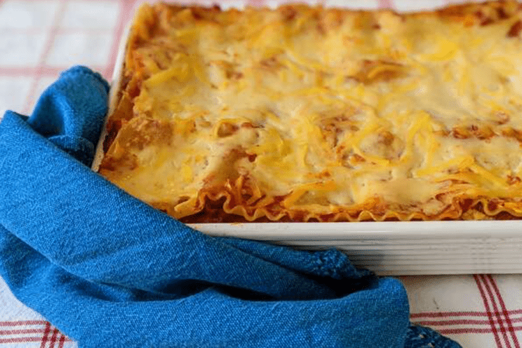

Home
Homemade Lasagna

Description
This is a classic homemade lasagna recipe that's perfect for any occasion.
Ingredients
- 1 pound ground beef
- 1 onion, chopped
- 2 cloves garlic, minced
Instructions
- Preheat the oven to 375°F (190°C).
-
In a large skillet, cook the ground beef, onion, and garlic until the
beef is browned. Drain excess fat.
- In a separate bowl, mix the ricotta cheese, egg, and parsley.
-
In a baking dish, spread a layer of meat sauce, followed by a layer of
lasagna noodles, then a layer of the ricotta mixture. Repeat layers
until all ingredients are used, ending with a layer of meat sauce on
top.
-
Cover with aluminum foil and bake for 25 minutes. Remove the foil and
bake for an additional 25 minutes, or until the top is golden and
bubbly.
- Let the lasagna cool for 10 minutes before serving.